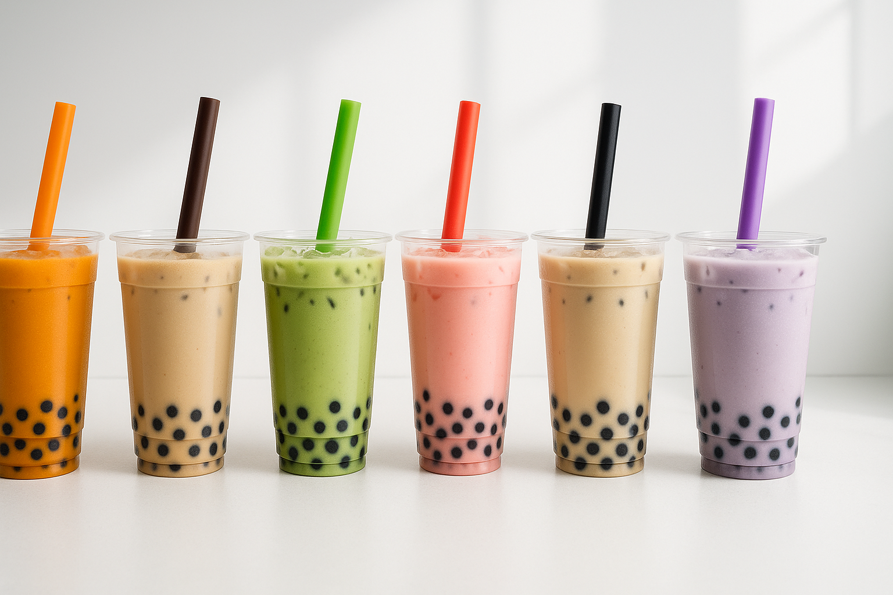
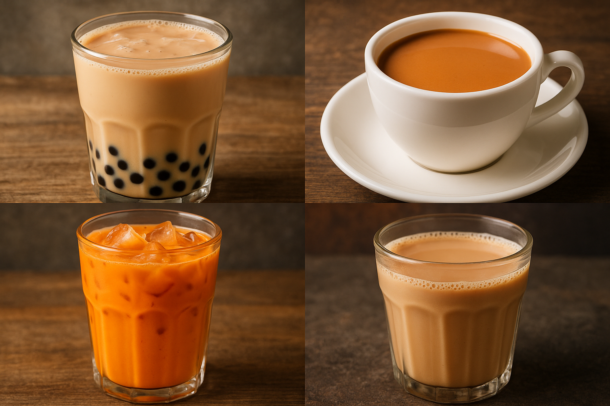
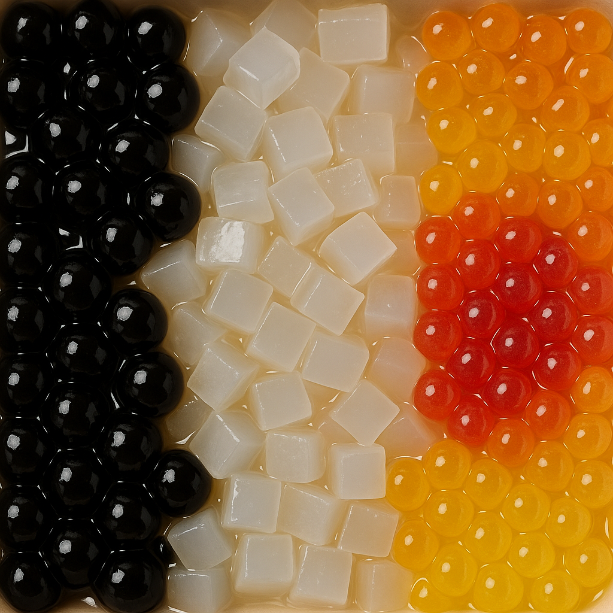
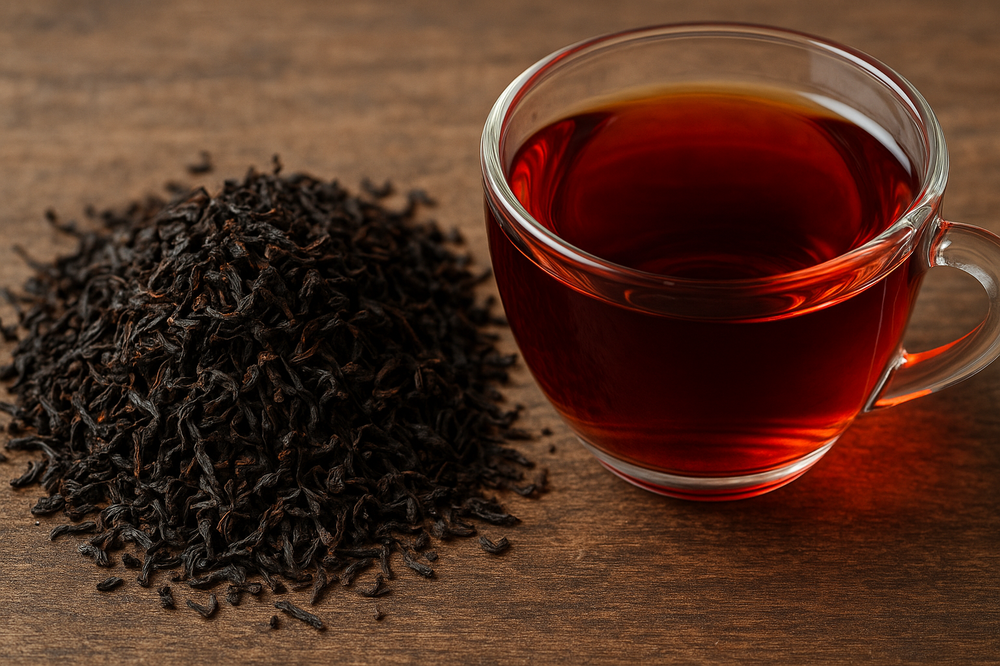
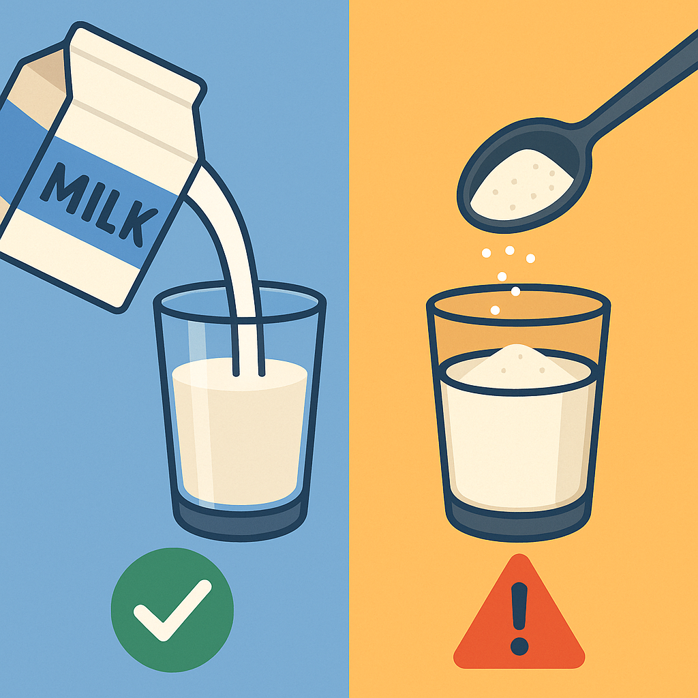

科学客观评估：奶茶对人体健康的影响综合报告
1. 引言
1.1 奶茶的全球风靡与健康争议
奶茶，作为一种将茶与奶（或其替代品）巧妙融合的饮品，已超越地域界限，在全球范围内广受欢迎 1。从亚洲街头的珍珠奶茶铺到欧美咖啡馆的菜单，奶茶以其多样的形式（冷热皆宜、配料丰富）和独特的魅力（醇厚的口感、诱人的外观、相对亲民的价格以及不断创新的口味）俘获了众多消费者 1。然而，在这股消费热潮背后，公众对奶茶健康影响的担忧与日俱增。特别是其通常较高的热量、糖分和脂肪含量，使其被频繁纳入关于糖甜饮料（Sugar-Sweetened Beverages, SSBs）健康风险的讨论中，引发了营养学界和公共卫生领域的广泛关注 1。

奶茶以其多样的口味和诱人的外观风靡全球。
1.2 报告目的与结构概述
本报告旨在基于现有英文科学文献、营养数据库及健康机构信息，对奶茶的健康影响进行一次科学、客观且全面的评估。报告将首先梳理常见的奶茶类型及其核心成分，深入剖析其营养构成，探讨茶和奶作为基底成分可能带来的潜在益处。随后，报告将重点分析奶茶中常见的高糖、特定脂肪（尤其是来自植脂末的反式或饱和脂肪）以及咖啡因等成分可能带来的健康风险，并评估珍珠等添加物的营养价值。最后，报告将总结健康专家和相关机构的建议，提出更健康的奶茶饮用策略，并对奶茶的整体健康影响做出综合性结论。
2. 奶茶面面观
2.1 常见奶茶类型巡礼
“奶茶”是一个涵盖性术语，泛指含有茶与奶类成分的饮品，其具体形态和风味因文化、地域和配方的不同而千差万别 1。以下是一些在全球范围内较为流行的奶茶类型：
- 台式奶茶/珍珠奶茶 (Taiwanese Milk Tea / Bubble Tea / Boba): 发源于中国台湾，通常以红茶为基底，加入牛奶（或奶精）、甜味剂，并以富有嚼劲的木薯淀粉球（即“珍珠”或“波霸”）为特色 1。口味和添加物种类极其繁多，是现代奶茶潮流的主要代表 1。值得注意的是，“Bubble tea”通常指整个饮品，而“Boba”特指珍珠 1。部分现代变种甚至可能不含真正的茶叶 10。其中，“黑糖珍珠奶茶”是一种广受欢迎的变体，其特点是使用黑糖糖浆调味，有时甚至不加茶，仅由牛奶、黑糖浆和珍珠构成 3。
- 港式奶茶 (Hong Kong-Style Milk Tea): 以其浓郁丝滑的口感著称，通常选用拼配的锡兰红茶（有时加入普洱茶），经过特殊冲煮工艺（如“拉茶”）后，与淡奶（Evaporated Milk）和/或炼奶（Sweetened Condensed Milk）混合而成 1。其历史可追溯至英国殖民时期，但香港本地对其进行了改良，使其茶味更浓郁 1。港式奶茶可热饮或冷饮，亦有与咖啡混合的“鸳鸯” 10。
- 泰式奶茶 (Thai Milk Tea): 通常使用浓郁的红茶（如锡兰或阿萨姆），加入糖、炼乳和淡奶，并以八角、豆蔻、肉桂、罗望子等香料调味 1。常以冰饮形式呈现，其标志性的亮橙色有时来源于食用色素 3。
- 印度奶茶/玛莎拉茶 (Indian Milk Tea / Masala Chai): 将浓烈的红茶（如阿萨姆）与水、牛奶、甜味剂（如糖或粗糖 Jaggery）以及多种香料（如豆蔻、姜、丁香、肉桂、黑胡椒）一同熬煮而成 1。是印度次大陆非常普遍的日常饮品。
- 英式/爱尔兰奶茶 (British/Irish Milk Tea): 传统上是将浓郁的红茶（如英式早餐茶、爱尔兰早餐茶、阿萨姆、锡兰茶）冲泡后，加入少量鲜牛奶 2。爱尔兰有时会使用稀奶油（Half-and-half）或奶油（Cream） 9。是否加糖或蜂蜜则依个人口味而定。
- 日式奶茶 (Japanese Milk Tea): 包括使用北海道产浓郁牛奶制作的“北海道奶茶”（通常用红茶底，以蜂蜜、焦糖或黑糖增甜）和使用冲绳特产黑糖“Kokuto”调味的“冲绳奶茶” 4。此外，用抹茶粉、牛奶和甜味剂调制的“抹茶拿铁”也极为流行 4。
- 其他地区奶茶 (Other Regional Milk Teas): 世界各地还有许多独具特色的奶茶，例如缅甸奶茶（Laphet yay）、尼泊尔奶茶、蒙古咸奶茶（Suutei Tsai）、也门奶茶（Shahi Adani）、肯尼亚奶茶（通常奶和糖比例更高）、克什米尔粉红奶茶（Kashmiri Chai，用绿茶和苏打制成）以及西藏酥油茶（用普洱茶、盐和牦牛酥油/奶制成）等 1。

从左上顺时针：台式珍珠奶茶、经典热奶茶、印度奶茶、泰式冰奶茶，展示了奶茶的多样性。
2.2 核心成分解析
奶茶的健康影响与其核心成分密切相关：
- 茶基 (Tea Base):
- 红茶主导: 大多数奶茶倾向于使用味道强劲的红茶，如阿萨姆、锡兰、大吉岭或早餐茶拼配 2。
- 绿茶与乌龙茶的应用: 绿茶（抹茶、茉莉绿茶）和乌龙茶也常用于特定风味奶茶 4。
- 冲泡浓度: 茶汤通常冲泡得较浓以保证茶味 8。
- 奶/奶制品/替代品 (Milk / Dairy Products / Alternatives):
- 鲜牛奶: 全脂、低脂或脱脂奶 2, 20。
- 加工奶制品: 淡奶、炼奶是某些类型奶茶的关键，但炼奶含糖高 1。
- 奶精/植脂末 (Non-Dairy Creamer): 商业奶茶常用，成本低、保质期长，但通常含葡萄糖浆、氢化植物油（饱和脂肪和潜在反式脂肪来源）、酪蛋白酸钠等 15, 22。
- 植物奶: 豆奶、杏仁奶、燕麦奶等用作替代品 2。
- 稀奶油/重奶油: 少数情况下使用 15。
- 甜味剂 (Sweeteners): 热量和健康争议的主要来源。
- 常见糖类: 白砂糖 1、黑糖/黑糖糖浆 3。
- 糖浆: 高果糖玉米糖浆（HFCS）常见 5，还有蜂蜜、枫糖浆、风味糖浆 1。
- 炼奶: 同时提供奶味和甜度 2。
- 常见添加物 (Common Additives / Toppings): 增加口感、热量和糖分。
- 珍珠/波霸 (Tapioca Pearls / Boba): 主要由木薯淀粉制成，通常浸泡在糖浆中 1。是热量和碳水化合物重要来源 5。可能含防腐剂、色素、增稠剂 22。
- 果冻/椰果 (Jelly / Nata de Coco): 通常由魔芋或琼脂制成，热量低于珍珠但仍含糖 5。
- 布丁 (Pudding): 增加柔滑度和甜度、热量 5。
- 爆爆珠 (Popping Boba): 内含果汁或风味液体 17。
- 其他: 红豆沙、芋泥、芝士奶盖等 16。

奶茶中常见的添加物，如珍珠（左）、椰果（中）和爆爆珠（右），显著增加热量和糖分。
表面上简单的“奶茶”标签掩盖了其成分的高度异质性。一杯奶茶中的“奶”可以是鲜奶，也可以是含氢化油的奶精粉；甜味可以来自少许蜂蜜，也可以来自大量的工业糖浆 5。从相对简单的传统茶饮 9 演变到现代商业奶茶 1，伴随着加工食品（奶精、糖浆、预制珍珠）24 的广泛应用，不仅改变了风味，更显著改变了其营养构成，使其越来越多地被归入高风险的糖甜饮料（SSB）范畴 5。
3. 奶茶的营养成分剖析
对典型奶茶的营养成分进行分析，可以更清晰地揭示其对健康可能产生的影响。
热量、碳水化合物与糖含量
- 巨大的热量差异: 一杯标准份量（约16盎司/470-500毫升）奶茶热量从120-150千卡到700千卡以上不等 5。
- 热量主要来源: 甜味剂和添加物是高热量、高碳水化合物的主因 5。一份珍珠可增加150-200千卡 21。
- 惊人的糖含量: 许多市售奶茶一杯含糖量轻易超过WHO和AHA推荐的每日添加糖上限（女性<25g，男性<36g，或<总热量10%）5。例如，一杯奶茶含糖量可达36g 34, 38g 5, 甚至高达87g (泰式) 或 92g (黑糖波霸) 16, 20。
- 糖甜饮料（SSB）的定性: 因普遍高添加糖（常来自HFCS），奶茶（尤其商业制备的）被归类为SSB 5。
脂肪含量（饱和脂肪与反式脂肪）
- 来源决定含量: 脂肪主要来自“奶”成分，尤其是全脂奶、炼奶、淡奶、奶油和植脂末（奶精）15。
- 植脂末的隐患: 植脂末常含氢化植物油（如氢化棕榈仁油），富含饱和脂肪 22。例如，某品牌经典奶茶含16.7克饱和脂肪 16。
- 反式脂肪的担忧: 氢化或部分氢化植物油是人造反式脂肪的主要来源 46，对心血管健康危害极大。尽管美国FDA已禁止部分氢化油（PHOs）51，但需注意：标签“0克反式脂肪”可能含<0.5克/份 46；成分表中的“氢化油”提示存在加工脂肪且饱和脂肪通常较高 24；完全氢化油仍可用（反式脂肪低但饱和脂肪高）52；进口产品风险可能更高。
咖啡因含量
- 来源: 主要来自茶基 1。
- 含量差异: 因茶叶种类、用量、冲泡时间而异（红茶>乌龙>绿茶）3。
- 参考范围 (每份约470ml): 约150mg 1；红茶底约80mg+ 3；印度奶茶60-120mg 3。具体品牌数据：经典红茶奶茶~95mg，乌龙奶茶~145mg，北海道奶茶~160mg，咖啡奶茶~215-300mg 16。一杯热印度奶茶(240g)约21.6mg 44。
微量营养素潜力
- 贡献有限: 相较于高热量和高糖，通常不是维生素和矿物质的优质来源 11。
- 来自牛奶: 若用鲜奶，可提供钙、蛋白质、钾、维生素D（若强化）、B族维生素 11。
- 来自茶叶: 茶叶富含多酚抗氧化物，含少量矿物质 11。但在奶茶中益处可能被高糖等抵消。
表1：代表性奶茶营养成分概览 (每份约16盎司/470-500毫升)
| 奶茶类型 |
热量 (千卡) |
总碳水 (克) |
总糖 (克) |
添加糖 (克) |
总脂肪 (克) |
饱和脂肪 (克) |
反式脂肪 (克) |
蛋白质 (克) |
咖啡因 (毫克) |
主要影响因素 |
数据来源 Snippet(s) |
| 经典红茶奶茶 (无珍珠, 范围) |
~150-470 |
~30-73 |
~20-46 |
未知 |
~1-15+ |
~1-16.7 |
通常为0* |
~2-4 |
~95 |
奶源(鲜奶/奶精), 糖量 |
11, 16 |
| 经典红茶奶茶 + 珍珠 (范围) |
~300-660 |
~40-125 |
~30-60 |
未知 |
~4-15+ |
~3.5-15 |
通常为0* |
~2-6 |
~85 |
奶源, 糖量, 珍珠量 |
5, 11 |
| 黑糖珍珠奶茶 (范围) |
~270-600 |
~45-70+ |
~22-60+ |
~23+ |
~1-7+ |
~0.4-3.5+ |
通常为0* |
~1-6 |
~48 |
黑糖浆量, 奶源, 珍珠量 |
11, 30 |
| 芋香珍珠奶茶 (Sharetea) |
722 |
138 |
57 |
未知 |
~18 |
16.2 |
通常为0* |
未知 |
80 |
芋泥/粉, 奶精, 糖, 珍珠 |
16 |
| 泰式珍珠奶茶 (Sharetea) |
749 |
157 |
87 |
未知 |
~11 |
9.1 |
通常为0* |
未知 |
105 |
炼奶/淡奶, 糖, 香料, 珍珠 |
16 |
| 北海道珍珠奶茶 (Sharetea) |
593 |
120 |
60 |
未知 |
~12 |
10.6 |
通常为0* |
未知 |
160 |
特殊奶源/奶精, 糖, 珍珠 |
16 |
| 纯冲泡红茶 (8盎司/240毫升) |
~0-2 |
0 |
0 |
0 |
0 |
0 |
0 |
0 |
~40-80 |
茶叶本身 |
3 |
| 纯冲泡绿茶 (8盎司/240毫升) |
~0-2 |
0 |
0 |
0 |
0 |
0 |
0 |
0 |
~20-45 |
茶叶本身 |
(同上类似来源) |
注：*反式脂肪通常标注为0克，但这可能意味着每份含量低于0.5克，并非完全不含，特别是当成分中含有氢化油时。总脂肪数据在部分来源中缺失或需要估算。热量和营养成分因品牌、配方和份量大小而有显著差异，本表数据仅供参考。
从表中数据可以看出，添加了牛奶/奶精、糖和珍珠后，奶茶的营养构成与纯茶相比发生了巨大变化，热量、碳水化合物和糖分急剧增加。高糖（尤其是液态糖/HFCS）与潜在的高饱和脂肪/反式脂肪（主要来自奶精）的组合，再加上高总热量，共同构成了许多商业奶茶对代谢健康的“三重威胁”5。
即使是听起来较“健康”的口味（如芋香、抹茶），实际成品的糖分和热量也可能非常高 16，消费者不能仅凭名称判断。部分奶茶（如乌龙茶底、北海道风味）咖啡因含量相当可观 16，需注意过量风险 35。
4. 奶茶的潜在健康益处
尽管现代商业奶茶备受诟病，其基础成分——茶和（鲜）奶——本身含有一些有益健康的物质。
茶的抗氧化特性
- 多酚类物质的宝库: 茶叶（绿茶、红茶）富含多酚抗氧化剂，如儿茶素(EGCG)、茶黄素、茶红素等 3, 57, 61。
- 抗氧化机制: 清除自由基、螯合金属离子、抑制产自由基酶、激活体内抗氧化通路 57。
- 潜在健康益处: 规律饮用无糖/低糖茶可能有助于降低心血管疾病风险 20，调节炎症，预防某些癌症 41，提高血浆抗氧化能力 59，改善认知功能和肠道菌群（红茶）66。

茶叶（如图中的红茶）是奶茶的基础，富含抗氧化多酚。
牛奶的营养价值
- 关键营养素来源: 使用鲜牛奶可提供优质蛋白质、钙、钾、维生素D（若强化）、B族维生素（B2, B12）11, 44。
- 牛奶自身的抗氧化性: 含有含硫氨基酸、乳清蛋白、维生素A/E/C、β-胡萝卜素等抗氧化成分 55。
牛奶与茶的相互作用：影响抗氧化吸收吗？
关于牛奶是否影响茶多酚吸收，科学界存在争议，尚无定论。
- 潜在的抑制作用: 部分研究表明牛奶蛋白（酪蛋白）可能与茶多酚结合，降低其体外抗氧化活性或体内生物利用度 11, 30, 70, 69。
- 无显著影响的证据: 也有研究发现加奶不影响红茶对血浆总抗氧化活性的益处 57，或不影响特定黄酮醇（槲皮素、山奈酚）的吸收 62。
- 结论: 证据矛盾且不确定 11。影响可能存在，但程度和意义待澄清。
重要提示: 讨论这些潜在益处时，必须认识到，在典型商业奶茶的高糖、高（不健康）脂肪面前，茶和鲜奶本身的微弱益处很可能被完全抵消。控制奶茶中的主要风险因素（糖、脂肪、热量）远比纠结于牛奶是否轻微影响多酚吸收更为关键 5, 6, 16, 36。
5. 奶茶相关的健康风险
商业化奶茶的常见配方潜藏多种不容忽视的健康风险。
高糖摄入的负面影响
奶茶通常含极高添加糖，与以下问题相关：
- 体重增加与肥胖: 提供大量“空卡路里”，饱腹感低，易致能量摄入过量 1。
- 2型糖尿病 (T2D): 高糖饮食，尤其SSB，显著增加T2D风险，可能通过胰岛素抵抗、增加胰腺负担、诱导肥胖等机制 5, 7。
- 心血管疾病 (CVD): 增加高血压、血脂异常风险，可能通过炎症、直接影响血压、损害血管等机制 5, 7。
- 非酒精性脂肪性肝病 (NAFLD): 常用的HFCS等富含果糖，过量摄入促进肝脏脂肪合成与堆积 7。
- 蛀牙 (Dental Caries): 高糖是蛀牙主因，WHO建议严格限制游离糖摄入 42。
- 其他潜在问题: 可能与认知下降、某些癌症风险增加 32、痛风 28 相关，并降低整体膳食质量 40。
脂肪（尤其来自奶精）对心血管健康的威胁
- 饱和脂肪: 植脂末常用的氢化植物油（棕榈仁油、椰子油）饱和脂肪含量高 22。过量摄入升高LDL-C（坏胆固醇），增加心脏病、中风风险 46。一杯奶茶的饱和脂肪可能超标 16。
- 反式脂肪: 工业反式脂肪（曾来自部分氢化油）危害最大，升高LDL-C、降低HDL-C（好胆固醇），极大增加心脏病风险 46，也与胰岛素抵抗、T2D相关 47。建议尽可能避免摄入 47。需警惕标签漏洞和成分表中的“氢化油” 46, 52。
添加物（珍珠、椰果等）的营养与健康考量
- 高热量、高糖、低营养: 主要成分是淀粉和糖，几乎无营养价值 5，显著增加总热量和糖负荷 11。一份珍珠约增150-200千卡 21。
- 消化问题: 木薯珍珠可能难消化 7。过量摄入瓜尔胶（有时用于珍珠）且饮水不足可能导致便秘 29。
咖啡因的潜在负面生理效应
- 过量风险: 饮用大杯或高咖啡因奶茶（如乌龙茶底）16 可能导致摄入过量，引发焦虑、失眠、心悸等 35。
- 个体差异: 咖啡因敏感人群、孕妇、儿童、心脏病患者等需特别注意 35。
综合来看，经常饮用典型商业奶茶，其高糖、高（不健康）脂肪、高热量及潜在高咖啡因的组合，对代谢和心血管系统构成多重威胁，累积风险巨大，可能加速慢性病发生。尤其对主要消费群体——年轻人 5 的长期健康构成隐患，因一杯奶茶含糖量就可能突破儿童青少年推荐限量 16, 37, 38。
6. 专家建议与健康选择
营养专家和公共卫生机构普遍建议谨慎对待奶茶消费。

健康选择示意图：推荐使用牛奶（左侧，打勾），警示添加过多糖分（右侧，警告标志）。
饮用频率与份量控制
- 定位为偶尔享受: 视为“放纵品”，而非日常饮品，限制频率（如每周一次或更少）6, 35。
- 选择小杯: 减少总摄入量 35。
如何选择更健康的奶茶
- 控糖是关键: 主动要求减糖（半糖、微糖）或无糖 11, 35。考虑天然甜味剂替代（若提供）29。
- 选择鲜奶，避开奶精: 要求用鲜牛奶（低脂/脱脂为佳）代替植脂末，避免氢化油和过多饱和脂肪 20。无糖植物奶也可 28。
- 减少或省略添加物: 少加或不加珍珠、布丁、奶盖等高热量配料 11。
- 回归简单: 优先选无糖纯茶，或只加少量低脂鲜奶且无糖/极少糖的简单奶茶 20。
替代饮品
日常选择白水、矿泉水、无糖纯茶、无糖黑咖啡等 28。
结合生活方式
偶尔饮用后可增加身体活动 28。均衡饮食更重要。
阅读标签与成分表
购买预包装奶茶时，查看营养成分表（关注热量、添加糖、饱和脂肪）和配料表（警惕“氢化油”）36。
让奶茶变得“更健康”实质上是在减少其流行的关键元素（糖、奶精、添加物），使其回归更传统的“茶+奶”形式。除了个人选择，改善消费环境（如强制营养标签、鼓励健康选项）和加强公众教育（认识到奶茶是SSB）也至关重要 5。
7. 结论
健康影响的综合评估
奶茶对健康的影响复杂。基础成分（茶、鲜奶）有潜在益处，但现代商业奶茶通过大量添加糖、植脂末（含饱和/反式脂肪风险）及高热量添加物，使其通常成为高热量、高糖、高（不健康）脂肪的饮品。整体评估，常规饮用此类奶茶弊大于利。作为一种糖甜饮料（SSB），其过量摄入与肥胖、2型糖尿病、心血管疾病等严重健康风险密切相关。
适量饮用与明智选择的重要性
无需完全禁止，关键在于“适量”与“明智选择”。将其作为偶尔享受，并主动选择：
- 严格控制频率和份量。
- 大幅减糖（最好无糖）。
- 选用鲜奶（低脂/脱脂），避开奶精。
- 省略或减少添加物。
- 回归简单的茶+奶形式。
消费者应提高认知，通过主动选择，将潜在的“健康炸弹”改造为负担较小的饮品。
未来方向
行业可探索更健康的创新（如天然低卡甜味剂、低GI珍珠替代品），推动透明营养信息和健康默认选项。在此之前，消费者保持警惕、节制消费、优先选择“健康化改造”的奶茶，是保护自身健康最务实的策略。
Works Cited / 参考文献
- Milk tea - Wikipedia, accessed April 27, 2025
- The Best Basic Milk Tea Recipe, accessed April 27, 2025
- Everything You Need to Know About Milk Tea - Bobatopia, accessed April 27, 2025
- A Comprehensive Guide to the Different Types of Milk Tea, accessed April 27, 2025
- Calories and sugars in boba milk tea: implications for obesity risk in Asian Pacific Islanders, accessed April 27, 2025
- Boba Tea: Are There Health Benefits? - Consensus: AI Search Engine for Research, accessed April 27, 2025
- Health Concern of Phenomenally Premium Boba Milk Tea and Pearls Beverages in Kuala Lumpur: Sugary Content and Physico-chemical Profiles Analysis, accessed April 27, 2025
- Milk Tea Recipe (Hong Kong Style) | The Kitchn, accessed April 27, 2025
- What is Milk Tea? History, Types, and How to Brew - ArtfulTea, accessed April 27, 2025
- Best Authentic Milk Tea Recipes - Simple Loose Leaf, accessed April 27, 2025
- What Is the Nutritional Value of Boba? - Healthline, accessed April 27, 2025
- How To Make Milk Tea: 5 Different Recipes, accessed April 27, 2025
- Bubble Milk Tea (Boba Milk Tea) - Couple Eats Food, accessed April 27, 2025
- How to Make Boba Tea - Simply Recipes, accessed April 27, 2025
- How the hell do I make milk tea like the stores? What am I doing wrong? : r/boba - Reddit, accessed April 27, 2025
- Milk Tea Calories and Nutrition Facts — Sharetea - Best Bubble Tea ..., accessed April 27, 2025
- Easy Vegan Bubble Tea - Plant-Based on a Budget, accessed April 27, 2025
- Vegan Boba Milk Tea, accessed April 27, 2025
- What is your perfect milk tea recipe? : r/Cooking - Reddit, accessed April 27, 2025
- Bubble Tea: What Goes Into a Cup - HealthXchange.sg, accessed April 27, 2025
- How Many Calories In Bubble Tea?, accessed April 27, 2025
- Ingredients List | The Boba Kit and Milk Tea Powder - SAMMEE, accessed April 27, 2025
- OKTEA Taro Rich Bubble Pearl Milk Tea Kit - Non-Dairy Creamer Edition - Taro Flavor, Real Sugar, Preservative-Free Tapioca Balls, Includes Paper Straws - Amazon.com, accessed April 27, 2025
- Non-Dairy Creamer for Bubble Tea, Tea Beverages, Coffee, Fruit ..., accessed April 27, 2025
- How to make homemade classic pearl milk tea? : r/boba - Reddit, accessed April 27, 2025
- Bubble Tea / Boba Tea Recipes, accessed April 27, 2025
- Dairy free home-brewed milk tea w/boba (recipe in comments) : r/dairyfree - Reddit, accessed April 27, 2025
- Boba Drinks - Holistic Registered Dietitian Nutritionist, accessed April 27, 2025
- Boba Tea: Is It Healthy?, accessed April 27, 2025
- Calories in Brown Sugar Milk Bubble Tea - Nutritionix, accessed April 27, 2025
- Calories in Classic Milk Tea with Brown Sugar Boba by J Way and Nutrition Facts, accessed April 27, 2025
- Boba Tea: Is It Good For You? Nutrients per Serving, Preparation ..., accessed April 27, 2025
- Tapioca Pearls Nutrition and Boba Calories Explained - Verywell Fit, accessed April 27, 2025
- Boba Milk Tea Nutrition Facts - Eat This Much, accessed April 27, 2025
- Bubble trouble: What happens if you drink too much bubble tea? | NUHS+, accessed April 27, 2025
- Added Sugars | American Heart Association, accessed April 27, 2025
- Get the Facts: Added Sugars | Nutrition - CDC, accessed April 27, 2025
- Added Sugar - The Nutrition Source - Harvard University, accessed April 27, 2025
- Why sugar matters – and how to cut back if you're eating too much of it, accessed April 27, 2025
- Effect of the AHA dietary counselling on added sugar intake among participants with metabolic syndrome - PMC, accessed April 27, 2025
- Added Sugars and Cardiovascular Disease Risk in Children: A Scientific Statement From the American Heart Association | Circulation, accessed April 27, 2025
- WHO calls on countries to reduce sugars intake among adults and children, accessed April 27, 2025
- Royal milk tea by Sangaria U.S.A., Inc. - Nutrition Value, accessed April 27, 2025
- Tea, with milk, chai, hot nutrition facts and analysis. - Nutrition Value, accessed April 27, 2025
- Carbs in Sc 3:15pm Milk Tea Original Milk Tea | Carb Manager, accessed April 27, 2025
- Trans fat is double trouble for heart health - Mayo Clinic, accessed April 27, 2025
- Practical Pearls: Dietary Trans Fatty Acids And Cardiovascular Disease Risk: Should We Go Back to Using Butter?, accessed April 27, 2025
- Intake of saturated and trans unsaturated fatty acids and risk of all cause mortality, cardiovascular disease, and type 2 diabetes: systematic review and meta-analysis of observational studies - PMC - PubMed Central, accessed April 27, 2025
- Know what's in your coffee creamer - First Stop Health, accessed April 27, 2025
- The problem with vegan coffee creamers, accessed April 27, 2025
- Facts about trans fats: MedlinePlus Medical Encyclopedia, accessed April 27, 2025
- 5 Ways to Avoid Hydrogenated Oil - Healthline, accessed April 27, 2025
- What is hydrogenated oil and is it safe? - Medical News Today, accessed April 27, 2025
- Hydrogenated Vegetable Oil: Uses, Downsides, and Food Sources - Healthline, accessed April 27, 2025
- Antioxidant Activity of Milk and Dairy Products - PMC - PubMed Central, accessed April 27, 2025
- Dietary Guidelines for Americans - Office of the Assistant Secretary for Health, accessed April 27, 2025
- Addition of Milk Does Not Alter the Antioxidant Activity of Black Tea - ResearchGate, accessed April 27, 2025
- Antioxidative properties of black tea - PubMed, accessed April 27, 2025
- Molecular evidences of health benefits of drinking black tea - PMC, accessed April 27, 2025
- Antioxidant mechanism of tea polyphenols and its impact on health benefits - PMC, accessed April 27, 2025
- Evaluation of the antioxidant properties of fruit and flavoured black teas - PMC, accessed April 27, 2025
- Addition of milk does not affect the absorption of flavonols from tea in man - PubMed, accessed April 27, 2025
- Effects of infusion time and addition of milk on content and absorption of polyphenols from black tea - PubMed, accessed April 27, 2025
- Antioxidant effects of green tea - PMC, accessed April 27, 2025
- Antioxidant effects of tea: evidence from human clinical trials - PubMed, accessed April 27, 2025
- Health-Promoting Effects of Black Tea: A Narrative Review of Clinical Trials - PubMed, accessed April 27, 2025
- A thought on the biological activities of black tea - PubMed, accessed April 27, 2025
- Nutritive Value of Foods - USDA ARS, accessed April 27, 2025
- Consumption of Milk-Protein Combined with Green Tea Modulates Diet-Induced Thermogenesis - PMC, accessed April 27, 2025
- In vivo antioxidant effect of green and black tea in man - PubMed, accessed April 27, 2025
- The Association Between Type of Fat and the Risk of Developing Cardiovascular Diseases - Touro Scholar, accessed April 27, 2025
- Dietary Fats and Cardiovascular Disease: A Presidential Advisory From the American Heart Association | Circulation, accessed April 27, 2025
- Saturated fat and trans-fat intakes and their replacement with other macronutrients: a systematic review and meta-analysis of prospective observational studies - World Health Organization (WHO), accessed April 27, 2025